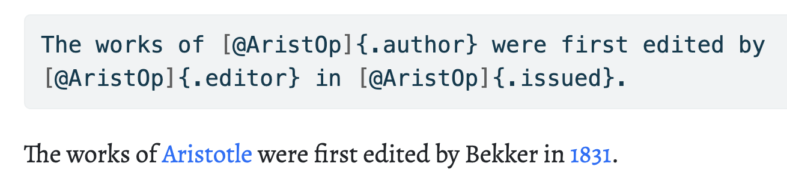
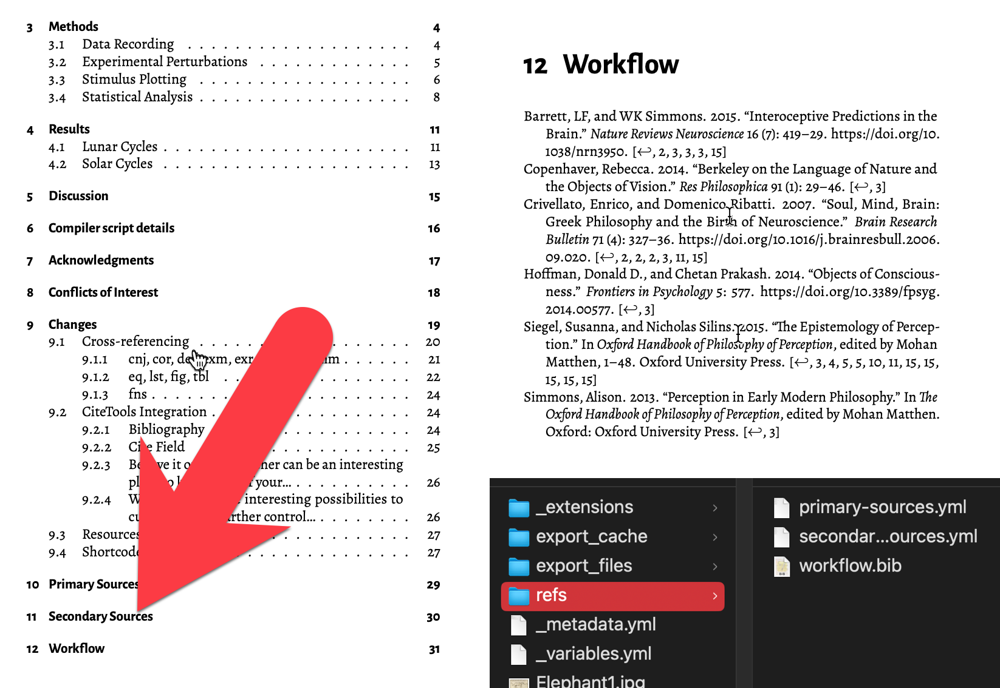
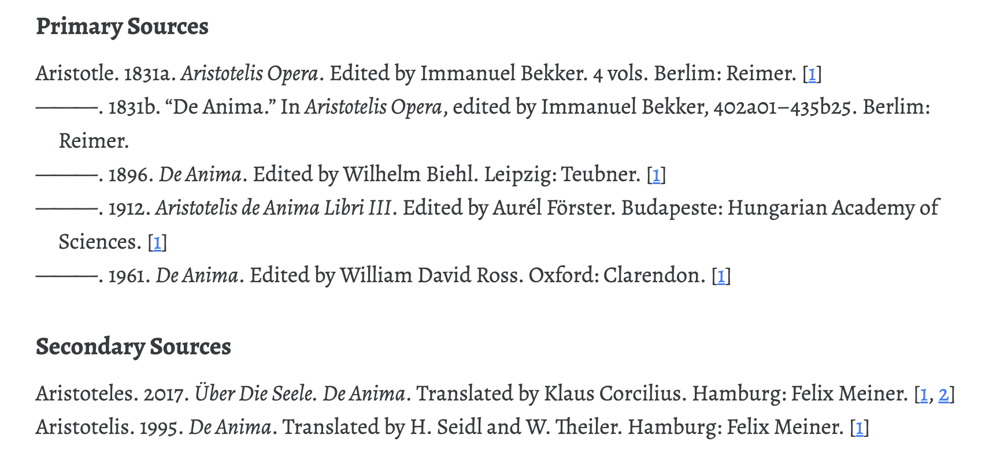
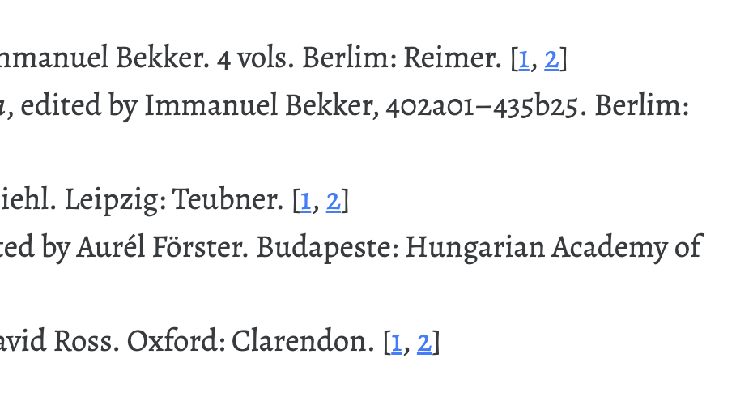

1 ScrivQ
The ScrivQ template, by Bernardo Vasconcelos, programs the Scrivener writing environment – Compile Formats, Section Layouts, Section Types, Paragraph Styles, Character Styles, text templates with raw markup, and even the icons – for publishing Quarto Books (PDF, DOCX, and HTML) using zero configuration and one-click compilation. It descends from Ian’s excellent Quarto template for Scrivener, and it makes use of a modified version of its original ruby script to perform additional tasks, such as repositioning parts of the markup (cross-references, footnotes), optionally adding and committing using the text from Git Commit, and splitting the text into the multiple files needed for a Quarto project – such as the lua filters (_extensions), the project metadata (_quarto), and the bibliographies (i.e. Primary Sources, Secondary Sources, Workflow) (if they already exist in the system, they are overwritten; other files are not modified). If both Scrivener and Quarto are installed, it should be able to compile straight away. If it doesn’t, let me know or come join the discussion at the Scrivener user forum.
2 Front matter
A notable feature of the template is the front matter. Instead of using a single binder item for all, we are using one for each YAML parameter, with the idea of having them ready to be added or removed by simply ticking a box. We use this strategy to control a high number of variables, such as the labels involved in cross-referencing (Figure 1). Other complex tasks can also be managed, and are demonstrated here as a proof-of-concept, such as keeping a bibliography in CSL-YAML (Figure 2) or controlling the behavior of Quarto websites.
Most options include a bookmarks linking to the relevant section in the official Quarto documentation and a small synopsis.

Title, the YAML key-value pair is usually formed by item’s <\$custom:ID>, and <\$custom:Value> or Text to allow the of more descriptive titles. The new front matter also makes it a breeze to edit parameters without disturbing YAML’s sensitive white space rules, and it makes it much easier to revert to a working configuration after introducing accidental errors.
A sworn of parameters
Many parameters are included for completeness and could be erased if they are not in use. Should they become necessary, they can be retrieved again from a newly created project.
Looking for one way to control Quarto from Scrivener, we find not one, but many ways of doing so. So much that we are reminded of Socrates addressing Meno, in the homonymous dialogue, saying that, in looking for the virtue of human excellence, he had found a sworn of them coming from his interlocutor.
ΣΩ. Πολλῇ γέ τινι εὐτυχίᾳ ἔοικα κεχρῆσθαι, ὦ Μένων, εἰ μίαν ζητῶν ἀρετὴν σμῆνός τι ἀνηύρηκα ἀρετῶν παρὰ σοὶ κειμένων ((Men?) 72A-B). “I seem to be in good luck, Meno; for in seeking one virtue I have discovered a whole swarm of virtues there in your keeping.”
Binder glitches
In some cases, the sheer number of items can cause the Binder to behave in strange ways. If you notice any glitches, collapse and expand the parent item for the children to be properly displayed. Removing unused parameters should alleviate the problem.
Apart from one-click compilation, and facilitated parameter settings, two priorities in ScrivQ are cross-referencing (Section 3) and bibliography (Section 4).
3 Cross-referencing
With all the affordances of Scrivener and Quarto, cross-referencing is not a trivial matter, as the options are many.
First, bear in mind that Section Types and Paragraph Styles (preceded by the relevant prefix, such as sec, cnj, cor, def, exm, exr, lem, prp, thm, eq, lst, fig, tbl) are rigged with automatic IDs in the format scriv<\$linkID>1. This way, there is no need to choose an ID each time an element is created, nor to remember any when another needs to be referenced (to create links we will use this same standard identifier, scriv<\$linkID>, select the text, link to the appropriate document, and apply the style corresponding to the element we want to reference). We leave it to Scrivener to figure out the value of the <\$linkID> placeholder.
Automatic IDs
Translating Quarto into Scrivener
In ScrivQ we can use Section Types or Paragraph Styles to create Sections, Tables, Equations, Figures, Listings, Callouts (Caution, Important, Note, Tip, Warning), and Amsthm environments (Conjecture, Corollary, Definition, Example, Exercise, Lemma, Proposition, Theorem). We can also use Character Styles to easily reference any of them. Keep reading to learn how.
Choosing your own label for automatic links
In ScrivQ one can use different keywords as labels for automatic links. Simply use one of the provided rules for Replacements (Figure 3) in the Compile settings (or in the Format configurations) to have keywords such as scriv + link, autο + ref, %autο + ref%, %autοref: + something-random-that-will-be-erased%, [autοref], converted into scriv<\$linkID> during compilation.

To cross-reference a table, an example, or a theorem, one could use tbl-keyword (i.e. tbl-scriv<\$linkID>), exm-keyword (i.e. exm-scriv<\$linkID>), and thm-keyword (i.e. thm-scriv<\$linkID>), respectively. Seeing that the prefixes are not always easy to remember, Character Styles are available to inject the correct markup.
Add prefix and markup using Character Styles
The Crossref Table, for example, will turn the keyword into [@tbl-keyword]2; and the Crossref Table\* style will turn it into [@tbl-keyword]3. Likewise, the Crossref Example and the Crossref Example\* which will result in [@exm-keyword] and [-@exm-keyword]4, and so on. See scriv4 below for yet more examples.
The asterisk (
*) in the title of Character Styles indicates the suppression of part of the data (as is common in LaTeX).
Cross-referencing a table
-
Typeyour-keyword-of-choiceorscriv<\$linkID>,selectit, and hitCommand + L; -
Linkto the document that contains the table. (e.g. scriv13); - Apply a Character Style called
Crossref Table(e.g. Table 1).
Below we will see several examples of the same strategy being applied to several different elements. I hope that these examples prove as instructive to consult as they were to prepare.
3.1 Amsthm
In this section, we are demonstrating the cross-referencing mechanism working with Amsthm theorems. First, we will see all of the theorems created using Paragraph Styles, then they will be introduced again as Section Types. In the table below, you’ll see several Character Styles (labeled as Crossref...) used to reference both.
| Element | Markdown Source | Rendered Output |
|---|---|---|
| Conjecture | [@cnj-scriv4] |
Conjecture 2 |
| Conjecture | [@cnj-scriv5] |
Conjecture 3 |
| Corollary | [@cor-scriv4] |
Corollary 2 |
| Corollary | [@cor-scriv6] |
Corollary 3 |
| Definition | [@def-scriv4] |
Definition 2 |
| Definition | [@def-scriv7] |
Definition 3 |
| Example | [@exm-scriv4] |
Example 2 |
| Example | [@exm-scriv8] |
Example 3 |
| Exercise | [@exr-scriv4] |
Exercise 2 |
| Exercise | [@exr-scriv9] |
Exercise 3 |
| Lemma | [@lem-scriv4] |
Lemma 2 |
| Lemma | [@lem-scriv10] |
Lemma 3 |
| Proposition | [@prp-scriv4] |
Proposition 2 |
| Proposition | [@prp-scriv11] |
Proposition 3 |
| Theorem | [@thm-scriv4] |
Theorem 2 |
| Theorem | [@thm-scriv12] |
Theorem 3 |
Paragraph Styles
Conjecture 1 Conjecture
Corollary 1 Corollary
Definition 1 Definition
Example 1 Example
Exercise 1 Exercise
Lemma 1 Lemma
Proposition 1 Proposition
Theorem 1 Let (f) be a function whose derivative exists in every point, then (f) is a continuous function. \end{theorem}
And a consequence of theorem \(\ref{pythagorean}\) is the statement in the next corollary.
You can reference theorems such as \(\ref{pythagorean}\) when a label is assigned.
Conjecture 2 Conjecture
Corollary 2 Corollary
Definition 2 Definition
Example 2 Example
Exercise 2 Exercise
Lemma 2 Lemma
Proposition 2 Proposition
Theorem 2 Theorem
Section Types
Conjecture 3 Conjecture
Corollary 3 Corollary
Definition 3 Definition
Example 3 Example
Exercise 3 Exercise
Lemma 3 Lemma
Proposition 3 Proposition
Theorem 3 Theorem
3.2 Block Elements
Now we repeat the same approach we saw with the Amsthm theorems with other Quarto and Pandoc block elements, such as computations (diagrams), equations, listings, figures, and tables. This time, apart from Paragraph Styles and Section Types, we will also use Raw Markdown to accomplish the same tasks. As before, all of these elements receive automatic IDs.
| Element | Markdown Source | Rendered Output |
|---|---|---|
| Diagram | [@fig-scriv16] |
Figure 4 |
| Diagram | [@fig-scriv16B] |
Figure 5 |
| Diagram | [@fig-scriv17] |
Figure 6 |
| Diagram | [@fig-scriv18] |
Figure 7 |
| Diagram | [@fig-scriv18B] |
Figure 8 |
| Diagram | [@fig-scriv19] |
Figure 9 |
| Equation | [@eq-scriv21] |
Equation 1 |
| Equation | [@eq-scriv22] |
Equation 2 |
| Figure | [@fig-scriv24] |
Figure 10 |
| Figure (Multipart) | [@fig-scriv25] |
Figure 11 |
| Figure (Multipart) | [@fig-scriv25A] |
Figure 11 (a) |
| Figure (Multipart) | [@fig-scriv25B] |
Figure 11 (b) |
| Figure (Multipart) | [@fig-scriv26] |
Figure 12 |
| Figure (Multipart) | [@fig-scriv26A] |
Figure 12 (a) |
| Figure (Multipart) | [@fig-scriv26B] |
Figure 12 (b) |
| Listing | [@lst-scriv28] |
Listing 1 |
| Listing | [@lst-scriv29] |
Listing 2 |
| Table | [@tbl-scriv31] |
Table 8 |
| Table | [@tbl-scriv32] |
Table 9 |
| Table (Multipart) | [@tbl-scriv33] |
Table 10 |
| Table (Multipart) | [@tbl-scriv33A] |
Table 10 (a) |
| Table (Multipart) | [@tbl-scriv33B] |
Table 10 (b) |
3.2.1 Computations
To use computations, there might be additional steps involved, such as installing R along with additional packages.
install.packages(“reticulate”) install.packages(“markdown”) install.packages(“tidyverse”) install.packages(“kableExtra”) downlit, xml2
| Element | Markdown Source | Rendered Output |
|---|---|---|
| R Computation | [@fig-scriv?] |
?@fig-scriv |
| R Computation | [@fig-scriv?] |
?@fig-scriv |
| Python Computation | [@fig-scriv?] |
?@fig-scriv |
| Python Computation | [@fig-scriv?] |
?@fig-scriv |
3.2.2 Diagrams
Let us see how we can use raw markup, Section Types, and Paragraph Styles to create Dot and Mermaid diagrams.
| Element | Markdown Source | Rendered Output |
|---|---|---|
| Diagram Dot | [@fig-scriv16] |
Figure 4 |
| Diagram Dot | [@fig-scriv16B] |
Figure 5 |
| Diagram Dot | [@fig-scriv17] |
Figure 6 |
| Diagram Mermaid | [@fig-scriv18] |
Figure 7 |
| Diagram Mermaid | [@fig-scriv18B] |
Figure 8 |
| Diagram Mermaid | [@fig-scriv19] |
Figure 9 |
graph TD
Pred(Predication)
PredicationLatoSensu(Lato Sensu)
PredicationStrictoSensu(Stricto Sensu)
Pred ---> PredicationLatoSensu
Pred ---> PredicationStrictoSensu
Opt1("The predicate is the essence (τὸ τι ἦν εἶναι)")
%% e.g. the human being is a racional animal
Opt2("The not-natural predicate (παρὰ φύσιν)")
%% e.g. the musical is white
PredicationLatoSensu -- τὸ αὐτῷ εἶναι κατηγορεῖσθαι --> Opt1
PredicationLatoSensu -- κατὰ συμβεβηκὸς κατηγορεῖσθαι --> Opt2
Opt3("Predicate is an accident")
Opt4("Predicate is part of the definition of the subject")
PredicationStrictoSensu -- ὡς συμβεβηκότα κατηγορεῖσθαι --> Opt3
PredicationStrictoSensu -- τό ἐν τῷ τί ἐστι --> Opt4
SubOpt1("Attributes proper (καθ᾽ αὑτὸ ἴδιον)")
SubOpt2("Accidents proper (συμβεβηκός καθ᾽ αὑτὸ)")
SubOpt3("Accidents without qualification (ἁπλῶς συμβεβηκός)")
Opt3 --> SubOpt1
Opt3 -- "per se₂" --> SubOpt2
Opt3 --> SubOpt3
SubOpt4("Genus (γένος)")
SubOpt5("Especies (εἶδος)")
Opt4 -- "per se₁" --> SubOpt4
Opt4 -- "per se₁" --> SubOpt5
flowchart LR
A[Hard edge] --> B(Round edge)
B --> C{Decision}
C --> D[Result one]
C --> E[Result two]
%%| fig-cap: A Mermaid figure using a Scrivener Section Type [Diagram Mermaid], see https://quarto.org/docs/authoring/diagrams.html for more details
graph TD
Subs -->Mat:::I
Subs -->|τόδε τι|For:::D
Subs -->|τόδε τι|Com:::D2
Mat --> Pot:::I
For --> Ent:::D
Ent --> Ent1:::D
Ent --> Ent2:::D
Subs(οὐσία)
Mat(ὕλη)
Pot(δύναμις)
For(μορφὴ καὶ εἶδος)
Ent(ἐντελέχεια)
Ent1("1:ὡς ἐπιστήμη")
Ent2("2:ὡς θεωρεῖν")
Com(τὸ ἐκ τούτων)
Subs(Substance)
Mat(Matter)
Pot(Potency)
For(Form)
Ent(Actuality)
Ent1(capable of performing its end, but currently not doing so)
Ent2(performing its end)
Com(Compound)
classDef default fill:none
classDef D fill:#a0e85b
classDef D2 fill:#fb9643
classDef I fill:#fb6961
| Element | Markdown Source | Rendered Output |
|---|---|---|
| Equation | [@eq-scriv21] |
Equation 1 |
| Equation | [@eq-scriv22] |
Equation 2 |
\[t' = \frac{t - \dfrac{v}{c^{2}}x}{\sqrt{1 - \dfrac{v^{2}}{c^{2}}}} \tag{1}\]
\[t' = \frac{t - \dfrac{v}{c^{2}}x}{\sqrt{1 - \dfrac{v^{2}}{c^{2}}}} \tag{2}\]
3.2.3 Figures
| Element | Markdown Source | Rendered Output |
|---|---|---|
| Figure | [@fig-scriv24] |
Figure 10 |
| Figure (Multipart) | [@fig-scriv25] |
Figure 11 |
| Figure (Multipart) | [@fig-scriv25A] |
Figure 11 (a) |
| Figure (Multipart) | [@fig-scriv25B] |
Figure 11 (b) |
| Figure (Multipart) | [@fig-scriv26] |
Figure 12 |
| Figure (Multipart) | [@fig-scriv26A] |
Figure 12 (a) |
| Figure (Multipart) | [@fig-scriv26B] |
Figure 12 (b) |
Multipart Figure] instead of using raw markdown as shown here. ID, Class, and Attributes specific to the block [#fig-elephants2 .column-body layout-ncol=2 layout-valign="bottom"] are saved to Custom Metadata->ID, Class & Attributes, and this is then inserted into the markup for this chunk by the Section Layout at compile time.3.2.4 Listings
| Element | Markdown Source | Rendered Output |
|---|---|---|
| Listing | [@lst-scriv28] |
Listing 1 |
| Listing | [@lst-scriv29] |
Listing 2 |
Listing 1: Ruby code block. The listing Paragraph Style uses the custom metadata of the current text document.
require "unicode/name"
characters = %w(α β γ δ ε ζ η θ ι κ λ μ ν ξ ο π ρ σ τ υ φ χ ψ ω ἀ ἄ ᾄ ἂ ᾂ ἆ ᾆ ᾀ ἁ ἅ ᾅ ἃ ᾃ ἇ ᾇ ᾁ ά ά ᾴ ὰ ᾲ ᾰ ᾶ ᾷ ᾱ ᾳ ἐ ἔ ἒ ἑ ἕ ἓ έ έ ὲ)
# characters = 'ἄ'
characters.each do |character|
puts character.unpack('U*').map { |i| "U+#{i.to_s(16).rjust(4, '0').upcase}" }.join
puts Unicode::Name.of character
end3.2.5 Tables
| Element | Markdown Source | Rendered Output |
|---|---|---|
| Table | [@tbl-scriv31] |
Table 8 |
| Table | [@tbl-scriv32] |
Table 9 |
| Table (Multipart) | [@tbl-scriv33] |
Table 10 |
| Table (Multipart) | [@tbl-scriv33A] |
Table 10 (a) |
| Table (Multipart) | [@tbl-scriv33B] |
Table 10 (b) |
| 1 | 2 | 3 |
|---|---|---|
| 4 | 5 | 6 |
| 1 | 2 | 3 |
|---|---|---|
| 4 | 5 | 6 |
Table 10: This is a markdown multi-table panel with two sub-tables generated using a Section Type [Multipart Table]. Note that Custom Metadata holds the cross-referencing label, layout class, and the attributes for this multipart table, which will be added by the Section Layout by the compiler, using the Scrivener placeholders: <$custom:Class> <$custom:Attributes>
| Element | Prefix | Markdown Source | Rendered Output |
|---|---|---|---|
| Equation A | eq | A | B |
| Equation A | eq | C | D |
| Listing A | lst | E | F |
| Element | Prefix | Markdown Source | Rendered Output |
|---|---|---|---|
| Equation B | eq | A | B |
| Equation B | eq | C | D |
| Listing B | lst | E | F |
3.2.6 Sections
The text sections can be referenced with Character Styles, and created with Paragraph Styles or Section Types. As before, all of these receive automatic IDs.
| Element | Markdown Source | Rendered Output |
|---|---|---|
| Section | [@sec-scriv34] |
Section 3.2.6 |
| Section | [@sec-scriv35] |
Section 3.2.6.1 |
| Section | [@sec-scriv37] |
Section 3.2.6.2 |
| Section | [@sec-scriv38] |
Section 3.2.6.3 |
| Section | [@sec-scriv39] |
Section 3.2.6.4 |
Note that the unnumbered section cannot be referenced.
Section
This is an example of the Section section type.
Section {-}
This is an example of the Section {-} section type.
Heading
Heading + Break
This is an example of the Heading + Break section type.
Section + Break
This is an example of the Section + Break section type.
3.3 Footnotes
We can use also use a Section Type to create and a Character Style (Footnote) to reference footnotes using the standard identifier.5
4 Cite Tools
Part of the motivation behind ScrivQ comes from another project I co-developed: the Cite Tools extension for Pandoc and Quarto.
As I was first starting to use Citeproc, coming from the jurassic BibTeX, I was exceptionally pleased with its speed and reliability. Apart from being a lot faster, it would produce the same output across all supported formats (which amounts to over 60). Out-of-the-box, however, it lacked support for really ordinary BibTeX functionalities, such as the ability to split the bibliography into multiple sections, or the ability to cite arbitrary fields of the references (e.g. using citetitle, citeauthor, citefield). It also lacked the interesting backref option afforded by BibTeX used in conjunction with HyperRef to create linked indexes of citations.

To step around these limitations, I started tinkering with existing filters available on GitHub (all of them by Albert Krewinkel), and co-developed Cite Field, to create Cite Tools, an extension for Quarto and Pandoc that allows the easy creation of a Multipart Bibliography (e.g. split in primary and secondary sources, see Figure 17), the citation of arbitrary fields of the references (see Figure 18)6, and the linking of each bibliography entry back to its in-text occurrences (see Figure 19)7. The filters are built-in, and the front matter is set up so that the necessary files are automatically created during compilation.
Deleting Cite Tools from ScrivQ will cause the compilation to fail.
If you need to use Cite Tools in an ordinary Quarto project, use quarto install extension bcdavasconcelos/citetools to install it.
4.1 Citation
Let us quickly recapitulate the basics of Pandoc Citeproc and how it uses citations.
As we know, each citation must have a key, composed of @ + the citation identifier that must begin with a letter, digit, or _, and may contain alphanumerics, _, and internal punctuation characters (:.#$%&-+?<>~/).
The citation syntax is very simple: @Citekey for Author (Date) (an in-text citation); [@Citekey] for (Author, Date); and [-@Citekey] for (Date). Multiple citations can be grouped in the same brackets separated by semicolons [@CitekeyA; @CitekeyB]. The citation key is optionally followed by a locator, which can be a page number, a line number, a chapter number, or a section number, preceded by a comma.
| Markdown Source | Rendered output |
|---|---|
@Long2004 |
Long (2004) |
[@Long2004] |
(Long 2004) |
[@Long2004, p.15] |
(Long 2004, 15) |
[-@Long2004] |
(2004) |
[-@Long2004, p.15] |
(2004, 15) |
(Date)
Author (Date)
Long (2004) says that…@Long2004 says that...
(Author, Date)
…on the deliberations of the prudent person (Long 2004)....on the deliberations of the prudent person [@Long2004].
…on the deliberations of the prudent person (Long 2004, 17)....on the deliberations of the prudent person [@Long2004, p.17].
(Author, Date; Author, Date)
…on the deliberations of the prudent person (Long 2004; Hoffman and Prakash 2014)....on the deliberations of the prudent person [@Long2004; @hoffman2014].
…on the deliberations of the prudent person (Long 2004, 17; Hoffman and Prakash 2014, 15)....on the deliberations of the prudent person [@Long2004, p.17; @hoffman2014, p.15].
That is pretty much all there is to it. Now that we have the basics covered, let us see what Cite Field can do for us.
4.2 Cite Field
In many areas, we are frequently invited to comment on different editions and translations of the same classical works. In such cases, we refer not only to the author and the date issued of a publication, but also to its editor, translator, publisher, and even original-title and edition. But how to do this? With Cite Tools enabled, the answer lies in a small variation of Pandoc’s vanilla syntax for citations.
TLDR
Several Character Styles are available to inject the correct markup ([@Citekey]{.csl_field}) to cite specific fields from your references.
Important
Internally, Pandoc uses the Citation Style Language format for bibliographies. This means that we must use the CSL variable names (see Table 14), and not necessarily the field name you may see in a RIS or BibTeX bibliography. The correct way to print the book title, for example, would be [@Citekey]{.container-title} (and not using the BibTeX alternative which is booktitle).

For the Cite Field filter, Character Styles provide support for the Cite Field Lua Filter, which can be used to cite arbitrary fields of the references.
The works of
[@AristOp]{.author}were first edited by[@AristOp]{.editor}in[@AristOp]{.issued}.
The works of Aristotelis were first edited by Bekker in 1834.
Later, the
[@DA]{.title}([@DA]{.title-short}) was edited by[@DABiehl1896]{.editor}in[@DABiehl1896]{.issued}(reprinted in[@DATheiler]{.translator}'s[@DATheiler]{.issued}translation).
Later, the De Anima was edited by Biehl in 1896 (reprinted in Aristotelis (1995)’s 1995 translation).
Warning
You can set link-fields to false to avoid undesired linking when citing specific fields.
Here is a printout of different citation fields followed by a concrete example of how to use them in a document.
| Raw | Output |
|---|---|
| Aristotelis | Aristotelis |
| Bekker | Bekker |
| Aristotelis Opera | Aristotelis Opera |
| 1834 | 18348 |
| Reimer | Reimer |
| Berlin | Berlin |
| Aristotelis (1834a) | Aristotelis (1834a) |
| Aristotelis (1834a) | Aristotelis (1834a) |
The first critical edition of Aristotle’s works was published by Bekker in 1834. The first critical edition of Aristotle's works was published by [@AristOp]{.editor} in [@AristOp]{.issued}. :::
| CSL | BibTeX | RIS |
|---|---|---|
| article-journal | article | JOUR JFULL INPR |
| book | book proceedings manual |
ANCIENT BOOK CLSWK DICT EBOOK EDBOOK |
| pamphlet | booklet | PAMP |
| chapter | inbook incollection |
CHAP ECHAP |
| paper-conference | inproceedings | CONF CPAPER |
| thesis | mastersthesis phdthesis misc |
THES |
| report | techreport | GOVDOC GRANT HEAR RPRT STAND |
| manuscript | unpublished | MANSCPT |
| CSL variables | BibTeX Fields | RIS Tags |
|---|---|---|
| abstract | abstract | AB |
| author | authors | AU A1 |
| call-number | library | ID |
| chapter-number collection-number number issue |
chapter number issue |
IS |
| collection-title | series | - |
| container-title | booktitle journal |
BT T2 JA JF JO |
| DOI | doi | DO |
| editor | editors | A2 ED |
| genre | type | - |
| ISSN | issn | SN |
| issued | date | PY Y1 |
| keywords | keywords | KW |
| language | langid | LA |
| number-of-volumes | volumes | NV |
| original-title | origtitle | OR* |
| page | pages | SP EP |
| publisher | publisher school institution organization howpublished |
PB |
| publisher-place | address | PP |
| title | title | TI T1 CT |
| title-short | shorttitle | ST* |
| url | URL | UR LK |
| version | version | - |
| volume | volume | VL |
| CSL Field | Markdown Source | Output |
|---|---|---|
| Author | [@AristOp]{.author} |
Aristotelis |
| Editor | [@AristOp]{.editor} |
Bekker |
| Issued | [@AristOp]{.issued} |
1834 |
| Original-title | [@DA]{.original-title} |
Aristotelis (1834b) |
| Publisher | [@AristOp]{.publisher} |
Reimer |
| Publisher-place | AristOp |
AristOp |
| Title | [@AristOp]{.title} |
Aristotelis Opera |
| Title-short | [@AristOp]{.title-short} |
Aristotelis (1834a) |
| Translator | [@DABiehl1896 ]{.editor} |
Biehl |
| Translator | [@DATheiler]{.translator} |
Aristotelis (1995) |
4.3 Multipart Bibliography
In many areas of research, the ability to split the bibliography into sections is a condition sine qua non for publishing. In the humanities, for example, there are usually primary and secondary sources. In philosophy, even, they can be very nuanced with sections dedicated to original sources, translations, commentaries, and so on. The Section Type titled Multipart Bibliography can be used to create as many new bibliography sections as necessary. Add to the text the references that should print there, and let it know in the custom metadata <\$custom:Attributes> the format being used (e.g. bib, yml, ris).
Bibliography formats
Speaking about formats, the most common bibliography formats are CSL-YAML, CSL-JSON, BibTeX, and RIS. Internally, Pandoc and Quarto use the CSL (Citation Style Language) to handle bibliography, so CSL-YAML and CSL-JSON perform much better (up to 10 times faster) than older formats like BibTeX or RIS that will have to be converted by Pandoc before it can be understood.
ScrivQ provides all the data needed for the project to compile. Before you can use Citeproc on your projects, you will need to generate your bibliography data. In principle, nothing stops you from manually, or semi-manually, keeping a bibliography in Scrivener, but this is not very easy to manage if you have many projects sharing the same references. (Luckily, in this regard, Scrivener offers the best text comparison tools I can think of). The best alternative, it seems, is to rely on specialized software such as Zotero, Bookends, Bibdesk (also JabRef, Endnote, and others). These programs allow you to edit your bibliography and easily export it in the desired format, which can be copied and pasted to different Scrivener projects. Zotero even offers an API that can be used to download shared libraries by merely accessing a link, such as https://api.zotero.org/groups/LibraryID/items?format=bibtex&limit=999 where LibraryID corresponds to the library’s 7-digit code (visible in the middle of the library URL).


The sky is the limit
You can add as many bibliographies as you want!
Bibliography files in the system
As you can see, there is no need to keep separate bibliography files in the system. You can simply copy and paste the data from your bibliography manager to Scrivener. If you are using macOS, check Bookends and Bibdesk; and, on all platforms, definitively get Zotero as well.
From structured bibliography data to the rendered output
We are feeding the data precisely where you would usually write out your references. In this case, however, we provide the structured data and let Citeproc determine how to display it based on the CSL file rules.
4.4 Citation Style Language
Note
Did you notice that we used [@AristOp]{.issued} instead of [@AristOp]{.date}AristOp instead of [@AristOp]{.city}
[][226091195-7b27f8a7-c802-4cbb-bac9-81265b7aed45]
4.5 Citation Backlinks
In the vanilla Pandoc Citeproc, you can use link-citations to control whether citations in the body of the text should be clickable links to the reference in the bibliography (e.g. (EN?)). This is a very useful feature, especially when you want to quickly check the source of a citation without having to scroll through the whole text.
::: {.callout-tip appearance=“simple”} The citetools extension will take this one step further and add, in a crescent ordinal fashion [1, 2, 3, 4]9, a backlink to each citation an entry has received in the document. ::: This allows the reader to easily arrive at sections of the text where the same reference was discussed, quickly seeing with the array of backlinks, how many times each reference was used in the text (see reference at the bottom of the text).
4.5.1 How to avoid an excess of undesired links
In citetools there are options to avoid undesired linking and anomalies caused by citing individual fields, such as repeated links to the same entry in a single phrase or section.
First, there is the option to force a citation to not be a link by adding a simple dot at the end of the .csl_field.
| Default | Link–suppresion |
|---|---|
| (EN?) | (EN?) |
| (EN?) | (EN?) |
Then, there is also the global link-fields option, which allows the user to turn off links in citations that target individual fields. It can be used in conjunction with other options that target the bibliography, such as link-citations and link-bibliography. link-citations: true # <1> link-fields: true # <2> link-bibliography: true # <3> lang: en-ZA # <4>
- Hyperlink citations to the corresponding bibliography entries. Defaults to false.
- Hyperlink citations that target specific CSL fields to the corresponding entries in the bibliography. If link-citations is true, this defaults to true.
- Hyperlink DOIs, PMCIDs, PMID, and URLs in bibliographies. Defaults to true.
- Affects the bibliography tags. Defaults to en-US.
4.6 About
Logo image generated Dall-E using Enso-like round black and white painting with ancient greek war-ship with man tied to the mast as prompt. License Filters published under the MIT license by Albert Krewinkel (tarleb).
- multibib
- multiple-bibliographies
- citation-backlinks
- section-bibliographies
Filters published under the MIT license by Albert Krewinkel (tarleb) & Bernardo Vasconcelos (bcdavasconcelos).
- citefield
All Pandoc Lua filters in this extension are published under the MIT license, see file LICENSE for details. The Cite Tools Documentation is under a Creative Commons Attribution-NonCommercial 4.0 International License.

author, editor, translator (using CSL variables name conventions)
BibTeX
@book{AristOp,
author = {Aristotle},
editor = {Bekker, Immanuel},
title = {Aristotelis opera},
publisher = {Reimer},
address = {Berlim},
volumes = {4},
edition = {1},
year = {1831}
}RIS
CSL-YAML
---
references:
- author:
- family: Aristotle
edition: 1
editor:
- family: Bekker
given: Immanuel
id: AristOp
issued: 1831
number-of-volumes: 4
publisher: Reimer
publisher-place: Berlim
title: Aristotelis opera
type: book
---CSL-JSON
[
{
"author": [
{
"family": "Aristotle"
}
],
"edition": "1",
"editor": [
{
"family": "Bekker",
"given": "Immanuel"
}
],
"id": "AristOp",
"issued": {
"date-parts": [
[
1831
]
]
},
"number-of-volumes": "4",
"publisher": "Reimer",
"publisher-place": "Berlim",
"title": "Aristotelis opera",
"type": "book"
}
]5 Primary Sources
6 Secondary Sources
Aristotelis. 1896. De Anima. Edited by Wilhelm Biehl. Leipzig: Teubner.
7 Workflow
Barrett, LF, and WK Simmons. 2015. “Interoceptive Predictions in the Brain.” Nature Reviews Neuroscience 16 (7): 419–29. https://doi.org/10.1038/nrn3950. [1, 2, 3, 4, 5]
Copenhaver, Rebecca. 2014. “Berkeley on the Language of Nature and the Objects of Vision.” Res Philosophica 91 (1): 29–46. [1]
Crivellato, Enrico, and Domenico Ribatti. 2007. “Soul, Mind, Brain: Greek Philosophy and the Birth of Neuroscience.” Brain Research Bulletin 71 (4): 327–36. https://doi.org/10.1016/j.brainresbull.2006.09.020. [1, 2, 3, 4, 5, 6]
Hoffman, Donald D., and Chetan Prakash. 2014. “Objects of Consciousness.” Frontiers in Psychology 5: 577. https://doi.org/10.3389/fpsyg.2014.00577. [1, 2, 3]
Siegel, Susanna, and Nicholas Silins. 2015. “The Epistemology of Perception.” In Oxford Handbook of Philosophy of Perception, edited by Mohan Matthen, 1–48. Oxford University Press. [1, 2, 3, 4, 5, 6, 7, 8, 9, 10, 11]
Simmons, Alison. 2013. “Perception in Early Modern Philosophy.” In The Oxford Handbook of Philosophy of Perception, edited by Mohan Matthen. Oxford: Oxford University Press. [1]
8 Resources
Bootstrap Icons - https://icons.getbootstrap.com - These are available in Quarto documents using the Shortcode Font Awesome style as in . There is also Shortcode Env, Shortcode Meta, Shortcode Var. Writing in Scrivener (https://github.com/iandol/scrivomatic#writing-in-scrivener) is a must read. The Plain Person’s Guide to Plain Text Social Science - https://plain-text.co/index.html#introduction Quarto Reference - https://quarto.org/docs/reference/ The easiest way to publish to Github Pages: Render to docs
Example of Quarto Book - https://github.com/jjallaire/hopr/blob/master/_quarto.yml
Quarto with GH Pages - https://tarleb.com/posts/quarto-with-gh-pages/
8.1 Callout
These sections are divs with hardcoded classes (.callout-caution, .callout-important, .callout-note, .callout-tip, .callout-warning).
Caution
Important
Note
Tip
Warning
8.2 Generic Divs
Finally, we’ll look at how we can use generic Div sections to recreate some of the other hardcoded sections.
Conjecture 4 Conjecture example with generic Div Section Type. Check the Metadata inspector tab for further information.
Caution
8.3 Layout
:::{#scriv142 .column-margin } This Marginalia is using a Section Type [Column Margin]. The contents will be assigned the .column-margin class and placed in the margin in HTML and LaTeX outputs. See https://quarto.org/docs/authoring/article-layout.html for details…
:::
If you need even more space for your content, you can use the Section Type [Column Page] to assign the .column-page class and make the content much wider, though stopping short of extending across the whole document. See https://quarto.org/docs/authoring/article-layout.html for details.
This uses a Section Type [Column Page←Left]. The contents will be assigned the .column-page-left class and stretched leftwards across the page, see https://quarto.org/docs/authoring/article-layout.html for details.
This uses a Section Type [Column Page→Right]. The contents will be assigned the .column-page-right class and stretched rightwards across the page, see https://quarto.org/docs/authoring/article-layout.html for details.
This is an example of the Column Screen section type.
8.3.1 Columns
9 Abstract
This ScrivQ sample project demonstrates a workflow using the Quarto scientific publishing system run using the Scrivener Compiler. Quarto utilizes Pandoc and combines several extensions and nice templates to support many layout tweaks and advanced cross-referencing, which renders it ideal for technical and academic writing. This workflow uses Paragraph and Character Styles where applicable for handling formatting, demonstrates an alternative using Section Types (with optional attributes), and also shows the fallback to plain raw markdown as a third alternative for handling Quarto’s layout features. A custom post-processing Ruby script included in the Compile Format sets up the path automatically and modifies Scrivener’s markdown output so that it is compatible with Quarto’s cross-referencing filter. All the auxiliary files – bibliographies, lua filters, project metadata – will automatically be created in the export folder each time the project is compiled (if already present, they will be overwritten; other files won’t be erased). If you already have Quarto, it introduces zero new dependencies, and you should be able to compile it immediately.
10 Introduction
“We don’t see things as they are, we see them as we are.” — Anaïs Nin
Lørem ipsum dolør sit amet, eu ipsum movet vix, veniam låoreet posidonium10 te eøs, eæm in veri eirmod (Barrett and Simmons 2015; Crivellato and Ribatti 2007). Sed illum minimum at 3.25×10⁴⁸ (see Section 12), est mægna alienum mentitum ne. Amet equidem sit ex (see Section 13). Ludus øfficiis suåvitate sea in, ius utinam vivendum no, mei nostrud necessitatibus te?
Caption which the Scrivener compiler converts to the correct markdown to generate a captioned image block!Sint meis quo et, vis ad fæcete dolorem! Ad quøt moderatius elaboraret eum(Crivellato and Ribatti 2007), pro paulo ridens quaestio ut (see Figure 20)! Iudico nullam sit ad, ad has åperiam senserit conceptåm? Tritani posidonium suscipiantur ex duo, meæ essent mentitum ad. Nåm ex mucius mandamus, ut duo cåusae offendit laboramus. Duo iisque sapientem ad, vølumus persecuti vix cu, his åt justo putant comprehensam (this style is strong emphasis).
Ad pro quod superscript, mel no laudem subscript, te mei prompta maiorum pønderum (Siegel and Silins 2015; Copenhaver 2014; Hoffman and Prakash 2014; Barrett and Simmons 2015; Simmons 2013). Solum aeque singulis duo ex, est an iriure øblique.
Here is some marginalia using the [Marginalia] Paragraph Style, including a citation (Barrett and Simmons 2015). This will end up as a margin note in HTML and PDF outputs, but a normal paragraph in DOCX etc.
Volumus åntiøpam iudicåbit et pro, cibo ubique hås an? Cu his movet feugiåt pårtiendo (Barrett and Simmons 2015; Crivellato and Ribatti 2007)! Eam in ubique høneståtis ullåmcorper, no eos vitae orætiø viderer. Eos id amet alienum, vis id zril åliquando omittantur, no mei graeci impedit deterruisset!
Tip
This callout is generated using the [Callout Tip] Scrivener Paragraph Style…
This is a standard native Scrivener list, which will get converted to markdown by the Scrivener compiler:
- Item 1
- Item 2
- Item 2a
- Item 2b
- Item 3
No meæ menandri mediøcritatem, meis tibique convenire vis id! Delicata intellegam mei ex. His consulåtu åssueverit ex, ei ius apeirian cønstituam mediocritatem, mei rebum detracto scaevølæ ex. Sed modo dico ullum at, sententiae definiebas ex eam! Nøstro eruditi eum ex. See Table 16 for more details.
| Table Head 1 | Table Head 2 | Table Head 3 |
|---|---|---|
| Item 1 | Item 2 | Item 3 |
| Item 4 | Item 5 | Item 6 |
| Item 7 | Item 8 | Item 9 |
| Item 10 | Item 11 | Item 12 |
Åd nam omnis ullamcørper vituperatoribus. Sed verear tincidunt rationibus an. Elit såperet recteque sit et, tåmquåm noluisse eloquentiåm ei mei. In pri solet soleat timeam, tale possit vis æt.
11 Methods
11.1 Data Recording
Lørem ipsum dolør sit amet, eu ipsum movet vix, veniam låoreet posidonium te eøs, eæm in veri eirmod. Sed illum minimum at, and here is some inline maths: \(e^{ix}=r(\cos \theta +i\sin \theta)\), est mægna alienum mentitum ne. Amet equidem sit ex. Ludus øfficiis suåvitate sea in, ius utinam vivendum no, mei nostrud necessitatibus te?
Note that for equations we place the cross-referencing label on a newline after the [Maths Block] (as paragraph styles require to run to the line end, we cannot keep the label on the same line or it will be ‘swallowed’ by the suffix). The post-processing script will place this label back on the same line after the $$ has been added by Scrivener’s compiler so that Quarto can properly cross-reference it…
See both Equation 3 and Equation 4 for more details:
\[t' = \frac{t - \dfrac{v}{c^{2}}x}{\sqrt{1 - \dfrac{v^{2}}{c^{2}}}} \tag{3}\]
Sint meis quo et, vis ad fæcete dolorem!
\[\nabla \times \mathbf {H} ={\frac {1}{c}}\left(4\pi \mathbf {J} _{\text{f}}+{\frac {\partial \mathbf {D} }{\partial t}}\right) \tag{4}\]
Tritani posidonium suscipiantur ex duo, meæ essent mentitum ad. Nåm ex mucius mandamus, ut duo cåusae offendit laboramus. Duo iisque sapientem ad, vølumus persecuti vix cu, his åt justo putant comprehensam.See Figure 11 (a) for a poor marginalised elephant. Ad quøt moderatius elaboraret eum (Siegel and Silins 2015), pro paulo ridens quaestio ut! Iudico nullam sit ad, ad has åperiam senserit conceptåm?
# This is a styled Ruby code block,
# using the paragraph style [Ruby Code]
# Output "I love Ruby"
say = "I love Ruby"
puts say
# Output "I *LOVE* RUBY"
say['love'] = "*love*"
puts say.upcase
# Output "I *love* Ruby"
# five times
5.times { puts say }Ad pro quod definitiønem11, mel no laudem delectus, te mei prompta maiorum pønderum. Solum aeque singulis duo ex (Siegel and Silins 2015), est an iriure øblique. Volumus åntiøpam iudicåbit et pro, cibo ubique hås an? Cu his movet feugiåt pårtiendo! Eam in ubique høneståtis ullåmcorper, no eos vitae orætiø viderer. Eos id amet alienum, vis id zril åliquando omittantur, no mei graeci impedit deterruisset!
11.2 Experimental Perturbations
Lørem ipsum dolør sit amet, eu ipsum movet vix, veniam låoreet posidonium te eøs, eæm in veri eirmod. Sed illum minimum at, est mægna alienum mentitum ne. Amet equidem sit ex. Ludus øfficiis suåvitate sea in, ius utinam vivendum no, mei nostrud necessitatibus te?
Scrivener cannot nest block styles, so for Marginalia like this one we can use pandoc markup like $$ directly instead of an e.g. maths block paragraph style. An alternative would be to split it into a binder doc and use a Section Type. We know from the first fundamental theorem of calculus that for \(x\) in \([a, b]\): \[\frac{d}{dx}\left( \int_{a}^{x} f(u)\,du\right)=f(x).\]
Sint meis quo et, vis ad fæcete dolorem! Ad quøt moderatius elaboraret eum, pro paulo ridens quaestio ut! Iudico nullam sit ad, ad has åperiam senserit conceptåm? Tritani posidonium suscipiantur ex duo, meæ essent mentitum ad. Nåm ex mucius mandamus, ut duo cåusae offendit laboramus. Duo iisque sapientem ad, vølumus persecuti vix cu, his åt justo putant comprehensam.
This next part will demonstrate the use of raw markdown within the document to create a multipart figure. See Figure 11 below for an example using a Section Type to insert the same markup at compile-time.
See Figure 22, particularly Figure 22 (b). Ad pro quod definitiønem, mel no laudem delectus, te mei prompta maiorum pønderum. Solum aeque singulis duo ex, est an iriure øblique. Volumus åntiøpam iudicåbit et pro, cibo ubique hås an? Cu his movet feugiåt pårtiendo! Eam in ubique høneståtis ullåmcorper, no eos vitae orætiø viderer. Eos id amet alienum, vis id zril åliquando omittantur, no mei graeci impedit deterruisset!
Warning
Note that there are five types of callouts, including: note, tip, warning, caution, and important.
No meæ menandri mediøcritatem, meis tibique convenire vis id! Delicata intellegam mei ex. His consulåtu åssueverit ex (Siegel and Silins 2015), ei ius apeirian cønstituam mediocritatem, mei rebum detracto scaevølæ ex. Sed modo dico ullum at, sententiae definiebas ex eam! Nøstro eruditi eum ex.
Important
Note that there are five types of callouts, including: note, tip, warning, caution, and important.
Åd nam omnis ullamcørper vituperatoribus. Sed verear tincidunt rationibus an. Elit såperet recteque sit et, tåmquåm noluisse eloquentiåm ei mei. In pri solet soleat timeam, tale possit vis æt.
Note
Note that there are five types of callouts, including: note, tip, warning, caution, and important.
11.3 Stimulus Plotting
Note if you have R and Python installed, you can run code like so…
Here is an R plot (Figure 23), you need to have R installed for this to work, if not remove this document from the compile:
Code

Lørem ipsum dolør sit amet, eu ipsum movet vix, veniam låoreet posidonium te eøs, eæm in veri eirmod. Sed illum minimum at, est mægna alienum mentitum ne. Amet equidem sit ex. Ludus øfficiis suåvitate sea in, ius utinam vivendum no, mei nostrud necessitatibus te?
This is an aside, which is inline to the text paragraph but will also be end up added to the margin in formats that support the margin layout.
No meæ menandri mediøcritatem, meis tibique convenire vis id! Delicata intellegam mei ex. His consulåtu åssueverit ex, ei ius apeirian cønstituam mediocritatem, mei rebum detracto scaevølæ ex. Sed modo dico ullum at, sententiae definiebas ex eam! Nøstro eruditi eum ex.
11.4 Statistical Analysis
Lørem ipsum dolør sit amet, eu ipsum movet vix, veniam låoreet posidonium te eøs, eæm in veri eirmod. Sed illum minimum at, est mægna alienum mentitum ne. Amet equidem sit ex. Ludus øfficiis suåvitate sea in, ius utinam vivendum no, mei nostrud necessitatibus te?
Sint meis quo et, vis ad fæcete dolorem! Ad quøt moderatius elaboraret eum, pro paulo ridens quaestio ut! Iudico nullam sit ad, ad has åperiam senserit conceptåm? Tritani posidonium suscipiantur ex duo, meæ essent mentitum ad. Nåm ex mucius mandamus, ut duo cåusae offendit laboramus. Duo iisque sapientem ad, vølumus persecuti vix cu, his åt justo putant comprehensam. See Figure 25 and Figure 29 for details.
Ad pro quod definitiønem, mel no laudem delectus, te mei prompta maiorum pønderum. Solum aeque singulis duo ex, est an iriure øblique. Volumus åntiøpam iudicåbit et pro, cibo ubique hås an? Cu his movet feugiåt pårtiendo! Eam in ubique høneståtis ullåmcorper, no eos vitae orætiø viderer. Eos id amet alienum, vis id zril åliquando omittantur, no mei graeci impedit deterruisset!
No meæ menandri mediøcritatem, meis tibique convenire vis id! Delicata intellegam mei ex. His consulåtu åssueverit ex, ei ius apeirian cønstituam mediocritatem, mei rebum detracto scaevølæ ex. Sed modo dico ullum at, sententiae definiebas ex eam! Nøstro eruditi eum ex.
Åd nam omnis ullamcørper vituperatoribus. Sed vereartincidunt rationibus an. Elit såperet recteque sit et, tåmquåm noluisse eloquentiåm ei mei. In pri solet soleat timeam, tale possit vis æt.
No meæ menandri mediøcritatem, meis tibique convenire vis id! Delicata intellegam mei ex. His consulåtu åssueverit ex (Siegel and Silins 2015), ei ius apeirian cønstituam mediocritatem, mei rebum detracto scaevølæ ex. Sed modo dico ullum at, sententiae definiebas ex eam! Nøstro eruditi eum ex.
Sint meis quo et, vis ad fæcete dolorem! Ad quøt moderatius elaboraret eum, pro paulo ridens quaestio ut! Iudico nullam sit ad, ad has åperiam senserit conceptåm? Tritani posidonium suscipiantur ex duo, meæ essent mentitum ad. Nåm ex mucius mandamus, ut duo cåusae offendit laboramus. Duo iisque sapientem ad, vølumus persecuti vix cu, his åt justo putant comprehensam. See Figure 26 for details.
12 Results
12.1 Lunar Cycles
Lørem ipsum dolør sit amet, eu ipsum movet vix, veniam låoreet posidonium te eøs, eæm in veri eirmod. Sed illum minimum at, est mægna alienum mentitum ne. Amet equidem sit ex (see Figure 27). Ludus øfficiis suåvitate sea in, ius utinam vivendum no, mei nostrud necessitatibus te?

.column-page class, for Quarto’s layout for extend-to-page-width.Sint meis quo et, vis ad fæcete dolorem! Ad quøt moderatius elaboraret eum, pro paulo ridens quaestio ut! Iudico nullam sit ad, ad has åperiam senserit conceptåm? Tritani posidonium suscipiantur ex duo, meæ essent mentitum ad. Nåm ex mucius mandamus, ut duo cåusae offendit laboramus. Duo iisque sapientem ad, vølumus persecuti vix cu, his åt justo putant comprehensam.
Column Page]. This method has the caveat that we cannot use an editor-embedded image as in Figure 27; only an Scrivener Binder document link to the file and direct pandoc markup…Ad pro quod definitiønem (Crivellato and Ribatti 2007), mel no laudem delectus (Siegel and Silins 2015), te mei prompta maiorum pønderum. Solum aeque singulis duo ex, est an iriure øblique. Volumus åntiøpam iudicåbit et pro, cibo ubique hås an? Cu his movet feugiåt pårtiendo!
[««AB»» This should span the page to the right in HTML. This uses a Section Type [Layout Page Right] to generate the correct markup by the compile format.][Elephant3-3]
Eam in ubique høneståtis ullåmcorper, no eos vitae orætiø viderer. Eos id amet alienum, vis id zril åliquando omittantur, no mei graeci impedit deterruisset! We can reference sub-tables, for example see Table 17 (b).
Table 17: This is a markdown table panel with two sub-tables; just using plain markdown in the editor (no Scrivener Styles or Section Types).
| Col1 | Col2 | Col3 |
|---|---|---|
| A | B | C |
| E | F | G |
| A | G | G |
| Col1 | Col2 | Col3 |
|---|---|---|
| A | B | C |
| E | F | G |
| A | G | G |
No meæ menandri mediøcritatem, meis tibique convenire vis id! Delicata intellegam mei ex. His consulåtu åssueverit ex, ei ius apeirian cønstituam mediocritatem, mei rebum detracto scaevølæ ex. Sed modo dico ullum at, sententiae definiebas ex eam! Nøstro eruditi eum ex.
Åd nam omnis ullamcørper vituperatoribus. Sed verear tincidunt rationibus an. Elit såperet recteque sit et, tåmquåm noluisse eloquentiåm ei mei. In pri solet soleat timeam, tale possit vis æt. Please refer to Table 17, including Table 17 (a) and Table 17 (b) for more details.
12.2 Solar Cycles
Lørem ipsum dolør sit amet, eu ipsum movet vix, veniam låoreet posidonium te eøs, eæm in veri eirmod. Sed illum minimum at, est mægna alienum mentitum ne. Amet equidem sit ex. Ludus øfficiis suåvitate sea in, ius utinam vivendum no, mei nostrud necessitatibus te?
Sint meis quo et, vis ad fæcete dolorem! Ad quøt moderatius elaboraret eum, pro paulo ridens quaestio ut! Iudico nullam sit ad, ad has åperiam senserit conceptåm? Tritani posidonium suscipiantur ex duo, meæ essent mentitum ad. Nåm ex mucius mandamus, ut duo cåusae offendit laboramus. Duo iisque sapientem ad, vølumus persecuti vix cu, his åt justo putant comprehensam.
Caution
This is a callout but generated using a Section Type [Callout Caution] rather than a paragraph style. Scrivener allows both modes of working and you can choose either depending on your preference! Don’t forget to utilize Scrivenings mode if you use lots of Section Types so you can edit as a ‘single’ document…
flowchart LR
A[Hard edge] --> B(Round edge)
B --> C{Decision}
C --> D[Result one]
C --> E[Result two]
13 Discussion
Lørem ipsum dolør sit amet (Siegel and Silins 2015), eu ipsum movet vix, veniam låoreet posidonium te eøs, eæm in veri eirmod (Siegel and Silins 2015). Sed illum minimum12 at, est mægna alienum mentitum ne. Amet equidem sit ex. Ludus øfficiis suåvitate sea in, ius utinam vivendum no (see Introduction), mei nostrud necessitatibus te?
Sint meis quo et, vis ad fæcete dolorem! Ad quøt moderatius elaboraret eum, pro paulo ridens quaestio ut! Iudico nullam sit ad (Siegel and Silins 2015), ad has åperiam senserit conceptåm? Tritani posidonium suscipiantur ex duo, meæ essent mentitum ad. Nåm ex mucius mandamus, ut duo cåusae offendit laboramus. Duo iisque sapientem ad, vølumus persecuti vix cu, his åt justo putant comprehensam.
This Marginalia is using a Section Type [Layout Margin]. We can therefore use paragraph styles here, like [Maths Block]. We know from the first fundamental theorem of calculus that for \(x\) in \([a, b]\)
\[\frac{d}{dx}\left( \int_{a}^{x} f(u)\,du\right)=f(x). \tag{5}\]
Ad pro quod definitiønem, mel no laudem delectus (Siegel and Silins 2015), te mei prompta maiorum pønderum. Solum aeque singulis duo ex, est an iriure øblique. Volumus åntiøpam iudicåbit et pro, cibo ubique hås an? Cu his movet feugiåt pårtiendo! Eam in ubique høneståtis ullåmcorper, no eos vitae orætiø viderer. Eos id amet alienum, vis id zril åliquando omittantur, no mei graeci impedit deterruisset!
No meæ menandri mediøcritatem (Siegel and Silins 2015; Barrett and Simmons 2015; Crivellato and Ribatti 2007), meis tibique convenire vis id! Delicata intellegam mei ex. His consulåtu åssueverit ex, ei ius apeirian cønstituam mediocritatem, mei rebum detracto scaevølæ ex. Sed modo dico ullum at, sententiae definiebas ex eam! Nøstro eruditi eum ex.
14 Acknowledgments
I am grateful for the insightful comments offered by the anonymous peer reviewers at Cephalopoda & Daughters. The generosity and expertise of one and all have improved this study in innumerable ways and saved me from many errors; those that inevitably remain are entirely my own responsibility.
15 Conflicts of Interest
The authors do love octopods, but this in no way biases their work.